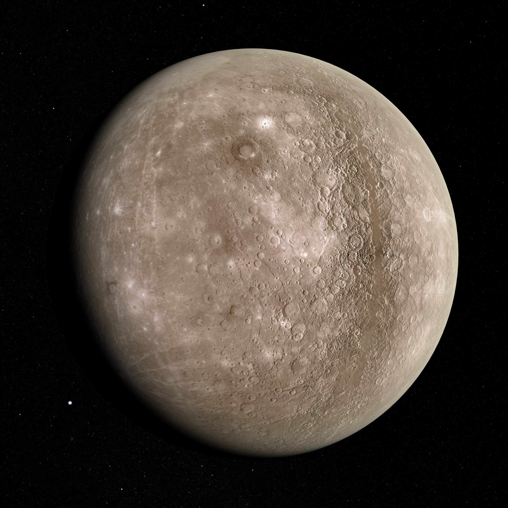
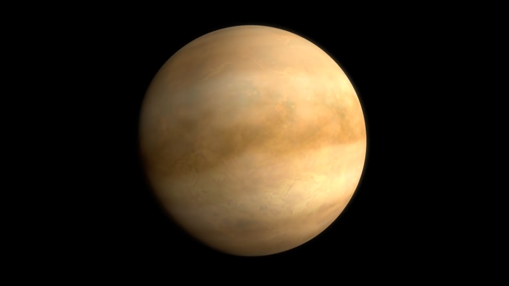
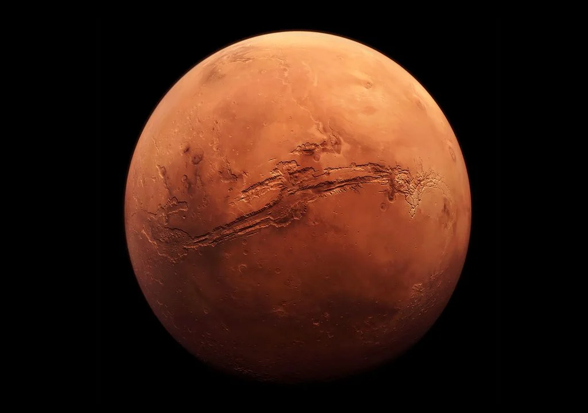
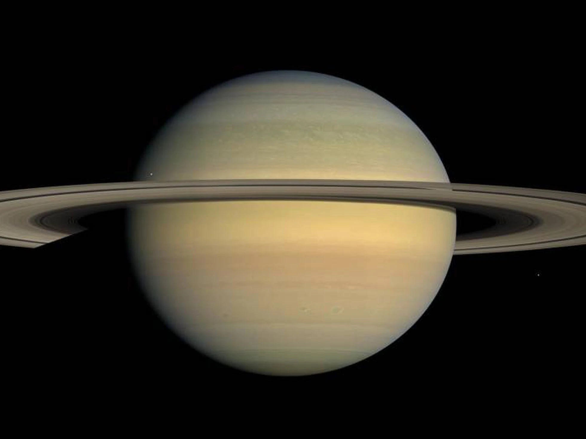
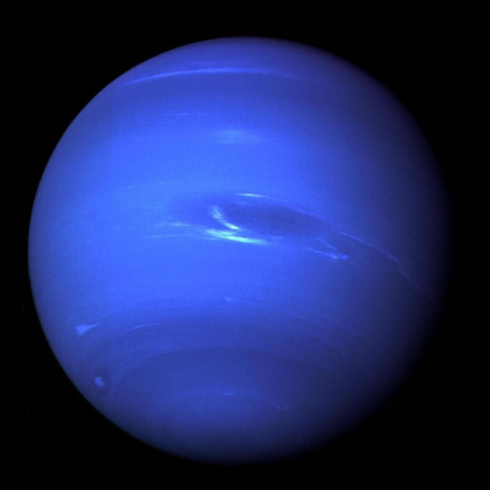

Planetas del sistema solar
Mercurio
Es el sistema solar más cercano al Sol y el más pequeño. Tiene una atmósfera delgada y no tiene ninguna luna.

Venus
Es el segundo planeta del sistema solar, su atmósfera es densa: atrapa el calor y por eso es tan caluroso.Gira en la direccion contraria de los demas planetas.

Tierra
Tercer planeta del sistema solar. La tierra es un planeta terrestre metálico.Es clasificado en esta categoría junto a Mercurio, Venus y Marte por la composición de sus núcleos.

Marte
Cuarto planeta del sistema solar y segundo planeta mas pequeño. Es un planeta desértico y frío, recibe el nombre de "planeta rojo" por el hierro oxidado que tiene del suelo.

Júpiter
Es el planeta mas grande del sistema solar y es el quinto en el orden de cercanía al sol. Tiene mas de 60 lunas y recibe su nombre del dios romano Júpiter (Zeus en la mitología griega).

Saturno
es el sexto planeta del sistema solar y es el unico con un sistema de anillos visible desde la Tierra. Esta compuesto por hidrógeno y helio.

Urano
Septimo planeta del sistema solar, compuesto en su mayor parte por hielo fluido sobre un nucleo sólido. Es el unico planeta que rota de un lado.

Neptuno
Es el planeta mas lejano del sol con la posición octava en el sistema solar, esta compuesto de una espesa mezcla de agua, amoniaco y metano sobre un centro solido del tamaño de la tierra. Fue el primero descubierto gracias a predicciones matematicas.
